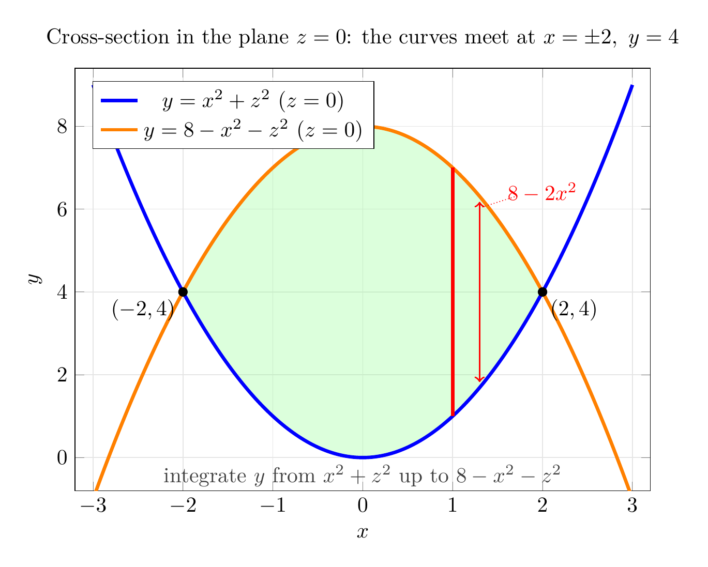

Please solve the problem in the following image.
(Image `20260927_231928_088348_utc_0800_0.png`. Alt text: Image: human_20260927_231928_088348_utc_0800)
20260927_231928_088348_utc_0800_0.png
End of problem
Answer
## Volume of the solid enclosed by $y=x^2+z^2$ and $y=8-x^2-z^2$
### Step 1 — Understand the geometry
Both surfaces are **circular paraboloids whose axes are the $y$-axis** (each has the form $y=(x^2+z^2)$-expression):
- $y=x^2+z^2$: vertex at the origin, opening in the $+y$ direction (a "cup" facing $+y$).
- $y=8-x^2-z^2$: vertex at $(0,8,0)$, opening in the $-y$ direction (a "cap" facing $-y$).
So the solid is a **lens-shaped region** trapped between them, symmetric about the plane $y=4$.
Because the solid is described naturally as "$y$ runs between two surfaces lying over a region in the $xz$-plane," we take $y$ as the **innermost** variable:
$$
V=\iiint_E 1\;dV=\iint_D\left[\int_{x^2+z^2}^{\,8-x^2-z^2}dy\right]dA
$$
where $D$ is the shadow (projection) of $E$ onto the $xz$-plane.
### Step 2 — Find the projection $D$ (where the surfaces meet)
Set the two $y$-values equal:
$$
x^2+z^2=8-x^2-z^2\;\Longrightarrow\;2(x^2+z^2)=8\;\Longrightarrow\;x^2+z^2=4,\qquad y=4
$$
The surfaces intersect in the **circle** $x^2+z^2=4$ in the plane $y=4$. Hence
$$
D=\{(x,z):\;x^2+z^2\le 4\},\qquad\text{a disk of radius }2\text{ centered at the origin.}
$$
Over $D$ we have $8-x^2-z^2\ge x^2+z^2$, so the upper limit is $y=8-x^2-z^2$ and the lower limit is $y=x^2+z^2$.
### Step 3 — Set up the triple integral (Cartesian form)
$$
V=\int_{-2}^{2}\!\int_{-\sqrt{4-x^2}}^{\sqrt{4-x^2}}\!\int_{x^2+z^2}^{\,8-x^2-z^2} 1\;dy\,dz\,dx
$$
The innermost integration gives the "height" of the solid in the $y$-direction:
$$
\int_{x^2+z^2}^{\,8-x^2-z^2}dy=\bigl(8-x^2-z^2\bigr)-\bigl(x^2+z^2\bigr)=8-2x^2-2z^2
$$
so $V=\iint_D\bigl(8-2x^2-2z^2\bigr)\,dA$. Directly integrating this over the disk is awkward — **this is the signal to switch to polar coordinates in the $xz$-plane.**
---
pgfplots_0.png
---
The 3D picture above shows the two paraboloids (blue $y=x^2+z^2$, orange $y=8-x^2-z^2$), their intersection circle $x^2+z^2=4,\ y=4$ (black), and one typical integrating segment (red) parallel to the $y$-axis, of length $8-2r^2$. Its shadow on the plane $y=0$ is the disk $D$.
### Step 4 — Evaluate with polar coordinates in the $xz$-plane
Since $D$ is a disk and the integrand contains $x^2+z^2$, use
$$
x=r\cos\theta,\qquad z=r\sin\theta,\qquad x^2+z^2=r^2,\qquad dA=r\,dr\,d\theta
$$
$$
0\le r\le 2,\qquad 0\le\theta\le 2\pi
$$
Therefore
$$
V=\int_0^{2\pi}\!\!\int_0^{2}\bigl(8-2r^2\bigr)\,r\;dr\,d\theta
=\int_0^{2\pi}\!\!\int_0^{2}\bigl(8r-2r^3\bigr)\;dr\,d\theta
$$
**Inner integral** (in $r$):
$$
\int_0^{2}\bigl(8r-2r^3\bigr)dr=\Bigl[4r^2-\tfrac{1}{2}r^4\Bigr]_0^{2}=(16-8)-0=8
$$
**Outer integral** (in $\theta$):
$$
V=\int_0^{2\pi}8\;d\theta=8(2\pi)=16\pi
$$
### Step 5 — Check
- **Cartesian route:** $\displaystyle\int_{-\sqrt{4-x^2}}^{\sqrt{4-x^2}}(8-2x^2-2z^2)\,dz=\tfrac{8}{3}(4-x^2)^{3/2}$, and $\displaystyle\int_{-2}^{2}\tfrac{8}{3}(4-x^2)^{3/2}dx=16\pi$. ✔ (verified symbolically)
- **Monte-Carlo estimate:** $\approx 50.33$, while $16\pi\approx 50.265$. ✔
- **Sanity bound:** the solid sits inside the cylinder of radius $2$ and height $8$ (volume $\pi\cdot 2^2\cdot 8=32\pi$); $16\pi$ is exactly half of it, consistent with the symmetry of the two paraboloids about $y=4$. ✔
$$
\boxed{V=16\pi}
$$
---
\documentclass[border=10pt]{standalone}
\usepackage{pgfplots}
\usepgfplotslibrary{fillbetween}
\pgfplotsset{compat=1.18}
\begin{document}
\begin{tikzpicture}
\begin{axis}[
width=11cm, height=8.5cm,
xlabel=$x$, ylabel=$y$,
xmin=-3.2, xmax=3.2, ymin=-0.8, ymax=9.4,
title={Cross-section in the plane $z=0$: the curves meet at $x=\pm2,\ y=4$},
legend pos=north west,
grid=major, grid style={black!10},
]
% invisible helper paths restricted to the overlap region |x| <= 2
\addplot[draw=none, domain=-2:2, samples=100, name path=L, forget plot] {x^2};
\addplot[draw=none, domain=-2:2, samples=100, name path=U, forget plot] {8-x^2};
% shaded lens = the solid seen edge-on
\addplot[green!45, opacity=0.30, draw=none, forget plot] fill between[of=U and L];
% the two parabolas
\addplot[blue, ultra thick, domain=-3:3, samples=200] {x^2};
\addlegendentry{$y=x^2+z^2\ (z=0)$}
\addplot[orange, ultra thick, domain=-3:3, samples=200] {8-x^2};
\addlegendentry{$y=8-x^2-z^2\ (z=0)$}
% intersection points
\addplot[only marks, mark=*, mark size=2, black, forget plot] coordinates {(-2,4) (2,4)};
\node[below left] at (axis cs:-2,4) {$(-2,4)$};
\node[below right] at (axis cs:2,4) {$(2,4)$};
% a typical vertical strip = the limits of the innermost integral
\addplot[red, ultra thick, forget plot] coordinates {(1,1) (1,7)};
\draw[<->, red, thick] (axis cs:1.3,1.8225) -- (axis cs:1.3,6.1775);
\node[red] at (axis cs:2.0,6.4) {$8-2x^2$};
\draw[red, thin, densely dotted] (axis cs:1.72,6.32) -- (axis cs:1.33,6.05);
\node[black!75] at (axis cs:0,-0.45)
{integrate $y$ from $x^2+z^2$ up to $8-x^2-z^2$};
\end{axis}
\end{tikzpicture}
\end{document}

pgfplots_1.png
---
### How to approach this kind of problem (recipe)
1. **Identify the axis of the paraboloids.** An equation of the form $y=f(x^2+z^2)$ is a paraboloid about the $y$-axis. Choose that axis as your *first* (innermost) integration variable, so the solid becomes "two graphs over a flat region."
2. **Find the shadow $D$.** Equate the two surfaces: $x^2+z^2=8-x^2-z^2\Rightarrow x^2+z^2=4$. This gives the domain and simultaneously confirms which surface is on top ($y=8-x^2-z^2$, since it contains $(0,0,8)$... test the origin: $0<8$, so $x^2+z^2$ is the lower limit).
3. **Write $V=\iiint_E 1\,dV$** with limits $\;x^2+z^2\le y\le 8-x^2-z^2\;$ over $(x,z)\in D$.
4. **Exploit rotational symmetry in the remaining two variables.** Whenever $D$ is a disk and the integrand involves $x^2+z^2$, use polar coordinates **in the $xz$-plane**: $x=r\cos\theta$, $z=r\sin\theta$, Jacobian $r$. (Here $y$ plays the role the textbook usually gives $z$ — nothing about polar coordinates requires them to be in the $xy$-plane.)
5. **Integrate outward** in the order $r$ then $\theta$; a constant $\int_0^{2\pi}d\theta=2\pi$ often appears at the end because the integrand is $\theta$-independent.